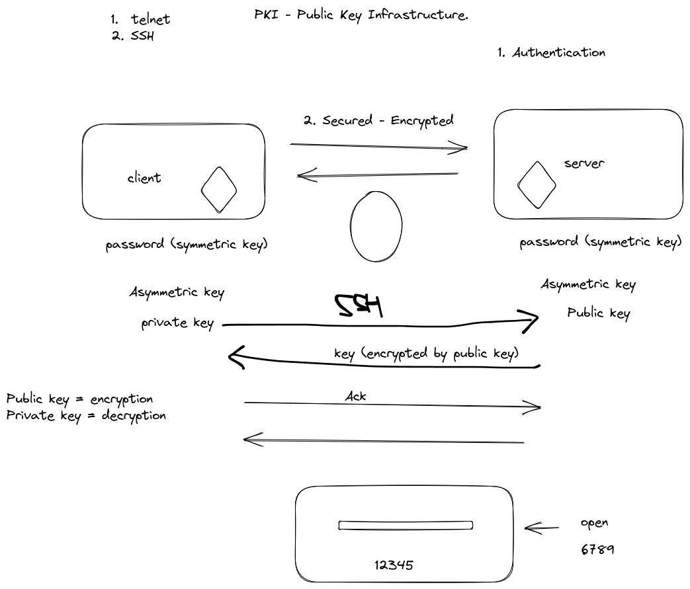

Understanding SSH and how to connect to the instance
Day 5 Checklist
- Understanding Key exchanges
- Understanding SSH
- How SSH works
- Using the key pair to login to the instance
What are the ways to authenticate?
- Username and password: This is the most common form of authentication. Users are required to enter a unique username and a secret password to gain access to a system or service.
- Two-factor authentication (2FA): 2FA adds an additional layer of security to username and password authentication by requiring a second factor, such as a code sent to a mobile device or a biometric identifier like a fingerprint
-
Multi-factor authentication (MFA): MFA is similar to 2FA, but it requires multiple factors for authentication, such as a password, a code sent to a mobile device, and a biometric identifier. This method provides the highest level of security but can be more complex for users to use.
-
Public key authentication: This method uses a public and private key pair to authenticate users. The user's public key is stored on the server, and the user must use their private key to log in. This method is commonly used in SSH and HTTPS connections.
-
Single sign-on (SSO): SSO allows users to log in to multiple applications or systems using a single set of credentials. This method is convenient for users but can increase the risk of a security breach if the credentials are compromised.
What is SSH?
- SSH (Secure Shell) is a network protocol that allows users to securely connect to remote servers over an unsecured network.
- SSH uses a public-private key pair to authenticate users and encrypt communications.
- The public key is stored on the server, while the private key is kept on the user's local machine.
- To establish an SSH connection, the client sends a request to the server, which responds with its public key.
- The client uses the server's public key to encrypt a random session key, which is sent to the server.
- The server decrypts the session key using its private key, and the client and server use the session key to encrypt and decrypt communications.
- SSH also supports port forwarding, which allows users to securely tunnel traffic between local and remote machines.
- There are several SSH clients available, including OpenSSH, PuTTY, and WinSCP.
- To use SSH, users must generate a public-private key pair using a key generation tool, such as ssh-keygen.
- SSH keys should be protected with a passphrase to prevent unauthorized access.
How key-exchange works?
- The client initiates an SSH connection request to the server.
- The server responds with its public key, along with a list of supported key exchange algorithms and encryption algorithms.
- The client checks the server's public key against its known hosts file to verify its authenticity. If the key is not found, the client prompts the user to confirm the key fingerprint before proceeding.
- The client generates a random session key, encrypts it with the server's public key, and sends it to the server.
- The server decrypts the session key using its private key, and sends an acknowledgement to the client.
- The client and server use the session key to encrypt and decrypt communications for the duration of the SSH session.
Key-pairs in Amazon
This is how key-pairs work with Amazon 1 2
- Amazon Lightsail is just like EC2 instances which use key pairs for authentication and to encrypt and decrypt login information.
- A key pair consists of a public key, which is stored on the instance, and a private key, which is stored on the user's local machine.
- When you launch an instance, you can specify a new key pair or use an existing one.
- If you lose your private key, you cannot log in to your instance unless you have a backup.
- To create a key pair, you can use the AWS Management Console, the AWS CLI, or a third-party tool.
- You should keep your private key secure and never share it with anyone.
- You can use different key pairs for different instances or groups of instances.
- To connect to your instance using SSH, you must specify the path to your private key file and the username for your instance.
- You can use the AWS CLI or third-party tools to manage your key pairs, such as importing or exporting keys.
- As an alternative to key pairs, you can use AWS Systems Manager Session Manager to connect to your instance with an interactive one-click browser-based shell or the AWS Command Line Interface (AWS CLI).
- If you need to share access to your instances, you can use AWS Identity and Access Management (IAM) to create and manage users and groups with specific permissions.
